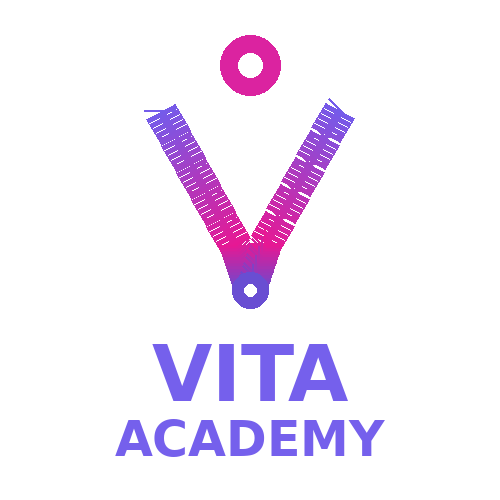

AWS
AWS Certified Cloud Practitioner
Základná cloudová certifikácia pokrývajúca AWS služby, cloud koncepty, bezpečnosť, pricing a prevádzkové základy.
Profesijný profil a projektové portfólio
Senior Java vývojár s viac ako 10 rokmi enterprise backend skúseností, aktuálne rozvíjajúci praktické využitie AI vo vývoji, modernizáciu legacy systémov a štruktúrované engineering workflow. Táto stránka rozširuje moje CV o detailnejší opis pracovných pozícií a projektov.
Silné skúsenosti s Java/Spring backendom, enterprise integračné pozadie, produkčný mindset a skúsenosť s legacy systémami, API, messagingom a cloud službami.
Praktické používanie Claude Code, štruktúrovaných Markdown promptov, vlastných Claude skills a commands, plánovania agentných/subagentných úloh a kontroly AI generovaného kódu.
Táto webová stránka má slúžiť aj ako plnohodnotný profesijný profil. PDF CV je kompaktná dvojstranová verzia vhodná pre HR screening, zatiaľ čo web pridáva viac kontextu, detailov k projektom a viditeľné certifikáty.
Základná cloudová certifikácia pokrývajúca AWS služby, cloud koncepty, bezpečnosť, pricing a prevádzkové základy.
Core Java certifikácia potvrdzujúca znalosti jazyka, objektovo orientovaného programovania a Java platformy.
Základ service-managementu používaný v prostrediach incident, change a produkčného supportu.
Certifikácia nadväzujúca na praktickú skúsenosť so správou ESXi clustra a virtuálnych serverov.

Profesionálne SQL školenie zamerané na praktickú databázovú prácu a silnejší backend data základ.
Prompt Engineering AI I, Introduction to Claude Code a Anthropic training so zameraním na praktické AI-assisted development workflow.
Kompaktné PDF CV je stále dostupné pre HR alebo formálny screening, no táto stránka môže slúžiť ako úplnejší profesijný profil.
AI asistovaná migrácia RPG programov do Java/Spring aplikácií so zameraním na kontrolovateľnosť, opakovateľnosť a udržiavateľný výstup.
Osobný koncept aplikácie na správu včelárstva: prehliadky úľov, počasie, fenológia rastlín, plánovanie včelstiev a AI asistované poznámky.
Záujem o praktickú AI gramotnosť, zdieľanie znalostí a vysvetľovanie technických tém zrozumiteľne technickému aj netechnickému publiku.
Dlhodobý praktický záujem o včelárstvo, pozorovanie prírody, potravinovú sebestačnosť a prepájanie technológií s reálnymi systémami.
Dlhoročný hráč čínskej doskovej hry Go, ku ktorej vediem aj svoje deti kvôli strategickému mysleniu, trpezlivosti a rozpoznávaniu vzorov.
Záujem o vzdelávací obsah o prírode a technológiách pre deti vrátane experimentovania s AI nástrojmi pri príprave učebných materiálov.